Role
Founding Product Designer
One of two designers. I own onboarding, Explore, profile, premium, and the mentor-side AI flow, plus brand, marketing, and AI production.
I joined Paira as one of its two product designers, before the product had found its shape. I own the surfaces that bring people in and let them help: onboarding, Explore, profile, premium, and the mentor-side AI flow. I also built the brand and every launch material, and I now use AI tooling to tell the product's story.
Founding Product Designer
One of two designers. I own onboarding, Explore, profile, premium, and the mentor-side AI flow, plus brand, marketing, and AI production.
Aug 2025 to present
Concept, beta, pivot, App Store launch, and ongoing growth work.
Early-stage startup
Founders, product, engineering, growth and community, two designers.
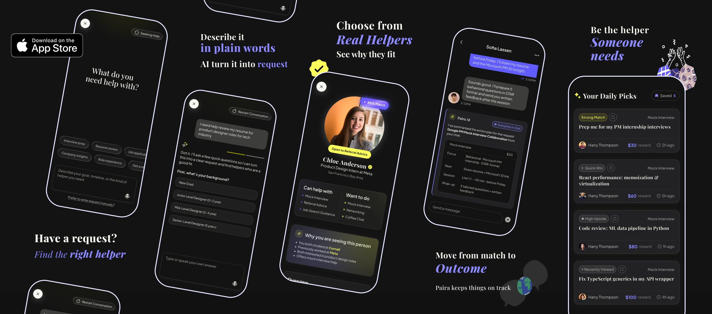
Paira started with one ambition: make it easy for a student or new graduate to reach the one person who can actually help them, without the performance that networking usually demands. When I joined in August 2025 there was an idea and a few screens, so I started close to zero. The direction changed several times on the way: from a swipe deck borrowed from dating apps, to seeing that swiping was not friendly to mentors, to understanding what people actually needed, to request-based matching, an AI plan, and a warm introduction. Each step was designed, reviewed, tested with users, and improved. In a startup this small, one of two designers does many jobs. Mine were to make the idea concrete, to own the surfaces where people enter and give help, to draw the brand, and later to run the launch and marketing creative. A year on, Paira is live on the App Store, 100+ people joined the waitlist and 50+ tested the beta, and the product is still moving, so my work on it is too.
People do not need more connections. They need the right person for one real need, at the moment they have it.
Before the product had a shape, we had to make the case for it. The early research I contributed to named three problems. Cold outreach on the big professional networks feels like shouting into the void. Formal mentors are expensive, scarce, or locked behind selective programs. School mentorship spots are few and run on fixed schedules. The numbers below come from the March 2026 pitch, with their sources.
of U.S. Gen Z aged 18 to 25 say they lack access to critical mentorship.
Big Brothers Big Sisters of America & Harris Poll, 2025of professionals believe networking is critical for career success; 70% of jobs are found through networks.
LinkedIn survey, 2017of mentoring-tool users report collaborating with peers and expanding networks online.
Mentorloop, 2025of Gen Z jobseekers build professional relationships through online career platforms.
Handshake survey via Fast Company, 2023“I think this is a good idea, but I’m not sure how different it is from [the big networks]. They already allow cold messaging through paid features. The challenge might be making connections feel more reachable and approachable.”
A participant in the first round of interviews
The big professional and campus networks are broad but transactional: you browse a marketplace of people and send requests into it. Leland and ADPList sell a booked session. Lunchclub and PolyWorks are relational but built around one format each. Paira takes the empty quadrant: relational and multi-purpose, peers helping peers on a specific need, with the introduction handled for you. That is what makes a connection feel reachable, which is exactly what the interviews asked for.

“Find the help. Be the help.”
The line the beta guide launched with in February 2026. Getting career help should feel natural and mutual: ask when you need it, offer when you are ready, without pressure or formality.
The early Paira borrowed its shape from dating apps: a People tab you swiped through, a Request tab with small bounty posts, and AI promised for later. We shipped that version to beta testers over TestFlight in early 2026. People liked the demo, but they did not come back. Even after two people matched, they still had to think of a reason to talk. We moved to a request-based product step by step, through several rounds of design, review, and user testing. The round of user tests below is the one that made the decision clear.
We designed and ran the tests as a design team: one-on-one sessions with potential users, a think-aloud protocol, and set tasks to complete. We brought the findings to the team and shaped the new direction together.
We made that call together. My part was to carry it into the surfaces I own, and the next section walks through each one.
A replay of the seeker flow the team shipped. Pick an answer to steer it, or let it run.
Paira’s core loop, shared across the team. A post lands in a helper’s Explore, a reply carries a reason, one helper is chosen and the others are told, and Paira AI writes the introduction. Every surface I own sits somewhere on this line.
The pivot made intent visible. It lowered the social cost of asking, and it gave the AI something better than a profile to work with.
Five surfaces, in the order a person meets them: onboarding, Explore, profile, premium, and the mentor-side AI flow. Each one had to be rethought when the product moved to requests, and each one shows a different part of that shift.
Onboarding used to be long: many required rounds before a new user saw anything. Early users and retention matter most at this stage, so after research we reordered what we ask for. Now it is a phone number, a code, a name, and a few taps on what you can do and want to do. The rest is filled in later, inside the app, once people have felt the value and want a better match.
Why the AI comes first. The first real screen is “What would you like to do today?” for two reasons. Every new user who states a need adds a real request to the app, which is what helpers come for. And it takes people straight to the core function: say the problem, get a drafted request, see who can help, in the first minute.
What changed. Fewer forced steps, a profile that grows in context, and an AI entry that fills the app with requests while it solves the user’s problem.
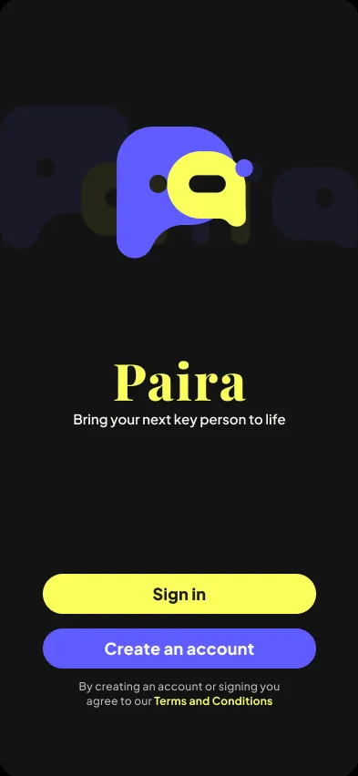
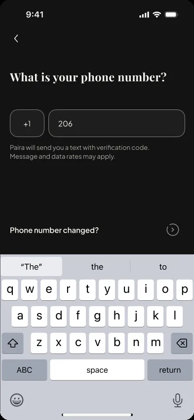
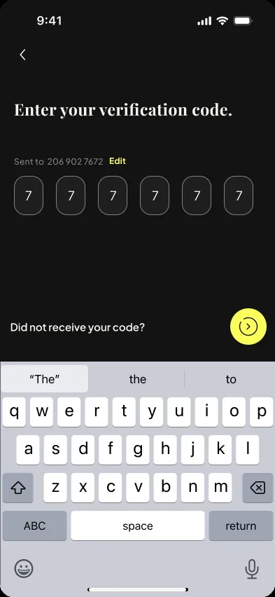
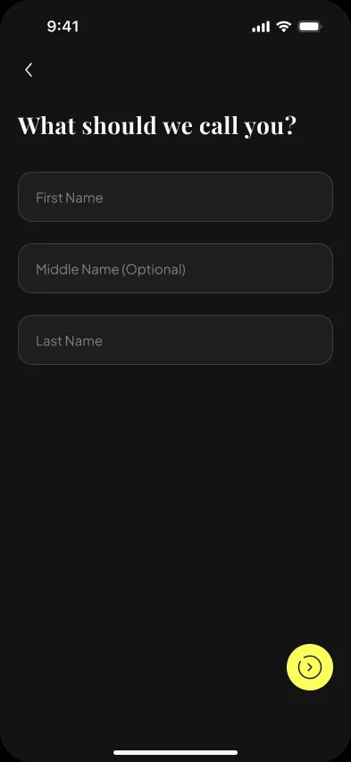
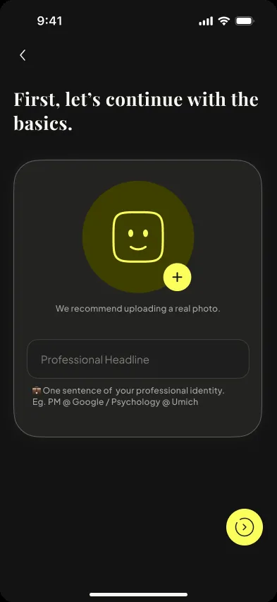
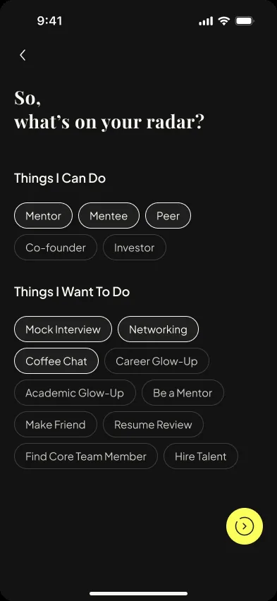
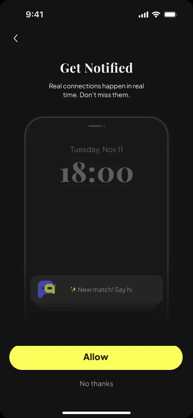
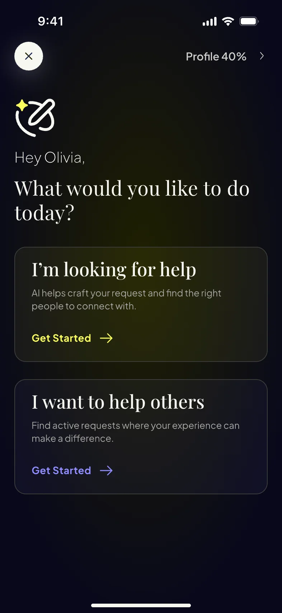
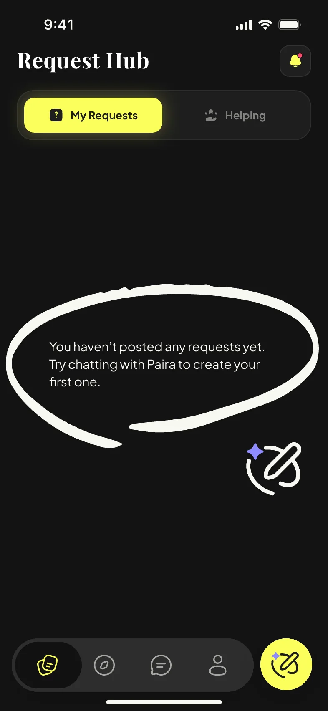
Explore is the helper’s front door. Each day it shows a handful of open requests matched to you, and each one carries a badge that says why it is there. You can save a pick before it refreshes away, pull to refresh, and when the day’s picks run out the screen tells you when the next batch arrives. Tapping a pick opens the request. “I’m Interested” moves it into your Request Hub as something you are helping with.
The limits are deliberate. An endless feed made helpers scroll and leave; a small daily set makes helping a favor you can finish today, so helpers come back. Badges give a reason instead of a percentage, so the AI’s judgment stays readable. The first visit teaches two gestures, save and refresh, and nothing else.
What changed. From a swipe deck of bounties to a list you read, save, and return to, where every card is something you can act on today.
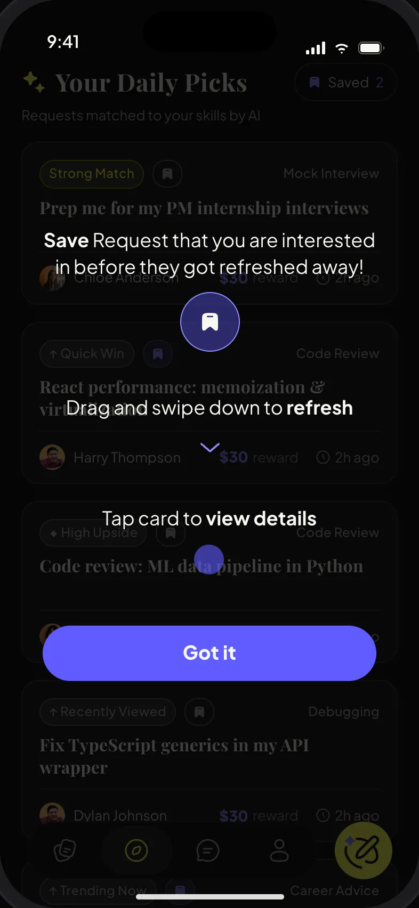
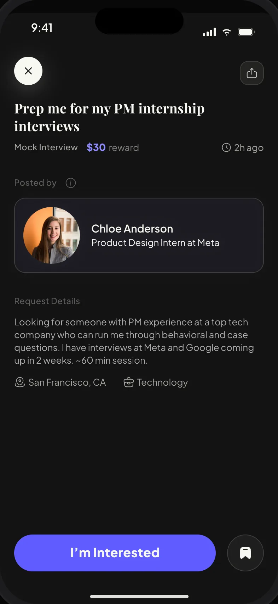
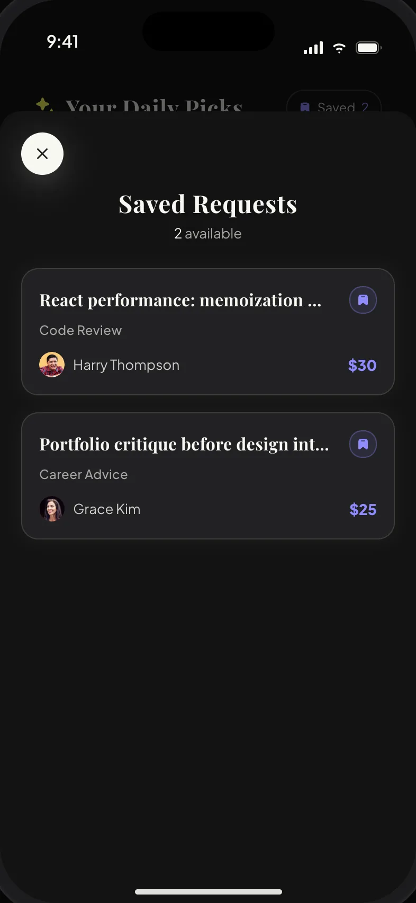
The profile leads with two lists, “Can help with” and “Want to do,” an “Open to networking” switch, and recommendations written by people you have actually worked with. Experience and education are there, but lower down, and the editor breaks them into small steps so nobody stalls on a blank form. Points, Request Boost, and settings also live here, because this is where a person decides how much of themselves to put into the platform. The profile is never demanded up front; the app asks you to complete it at the moment it starts to matter, when mentees are deciding whether to trust you.
Why. A profile is read by someone deciding whether to accept your help, or by the AI deciding whether to suggest you. Both need to know what you can do, not where you went to school. Asking for it later, in context, is what lets onboarding stay short without losing match quality.
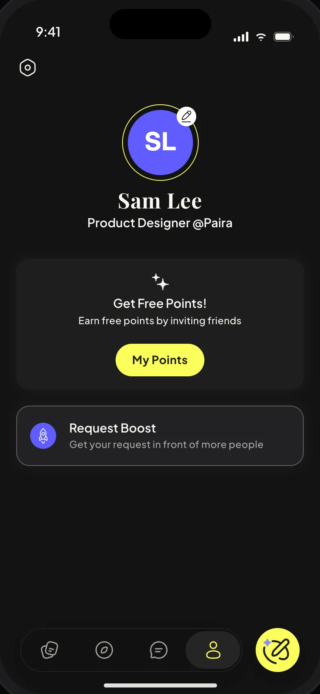
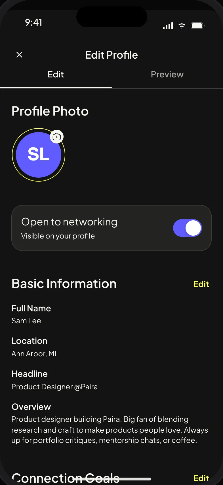
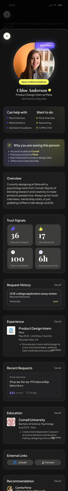
Paira’s premium layer runs on points. You earn them by inviting friends who complete a profile, which grows the network, and you spend them to boost a request for 24 hours, to ping someone without a match, or to see who has “Paira’d” you. Boost is the piece I care most about: the one paid action that helps the request rather than the ego, so paying feels like moving your ask forward. The purple sheet and the “Request Boosted!” moment are meant to feel like a small celebration, not a checkout.
Next. Premium Ping and “See who Paira’d you” come from the match era. The next round decides whether they stay or the paid layer narrows to Boost and request visibility.
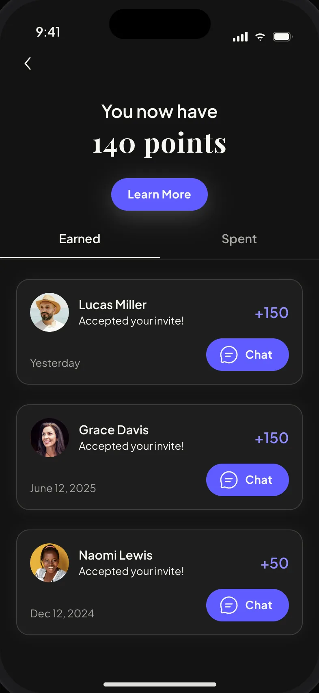
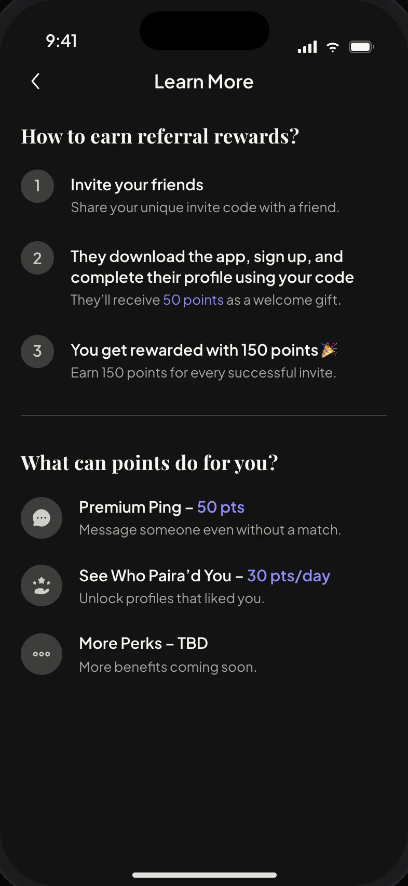
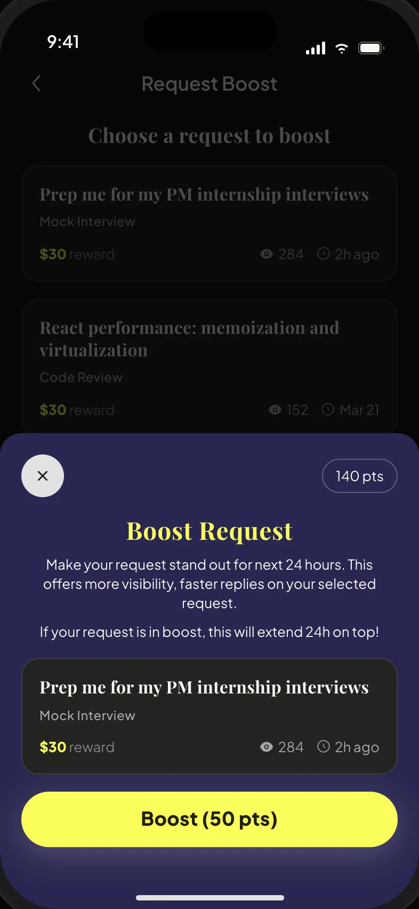
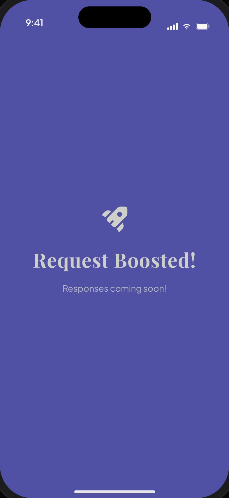
Helpers give the app its supply, and they have less patience than seekers, so the mentor flow had to be the fastest thing in Paira. It opens on suggestion bubbles built from your onboarding intentions and past preferences, sized by how likely each one is to fit, so most helpers reach their matches in two taps. “Tell Us More” is the slower path: a paragraph in your own words, which the AI reads and turns into tags you can edit before it shows the mentees waiting for you.
The design problem was symmetry without sameness: a mirror of the seeker flow, without its questions. The AI shows its work for a beat and then gets out of the way, and the outcome is a list of concrete things to do, not people to judge. At the end the flow asks one thing, whether to save these answers to your profile, and that is how the mentor flow feeds Explore.
Shown here as core functions, designed with the team rather than owned by me: the seeker-side AI request flow, Request Hub, chat with Paira AI action plans, meeting scheduling, and the helper profile’s “Why you are seeing this person” card.
Each row records the question we faced, what we chose, what we gave up, and why. None of these was free.
The identity is mine: the mark, the icon family, the loading animation, and the type, color, and shape system the app runs on. The component library is shared with the team.
Mark
The wordmark folds into the mark. Tap to replay.
Why it looks this way
Type
Find the help. Be the help.
Color
Components
Motion
From the waitlist in late 2025 to the App Store launch in June 2026, the summer speaker series, and this fall’s back-to-school push, I designed every public-facing piece: recruitment posters, a bilingual beta guide, the beta install site, App Store artwork, launch teasers, and event graphics. In the middle is the newest piece, a concept film made with an AI agent.

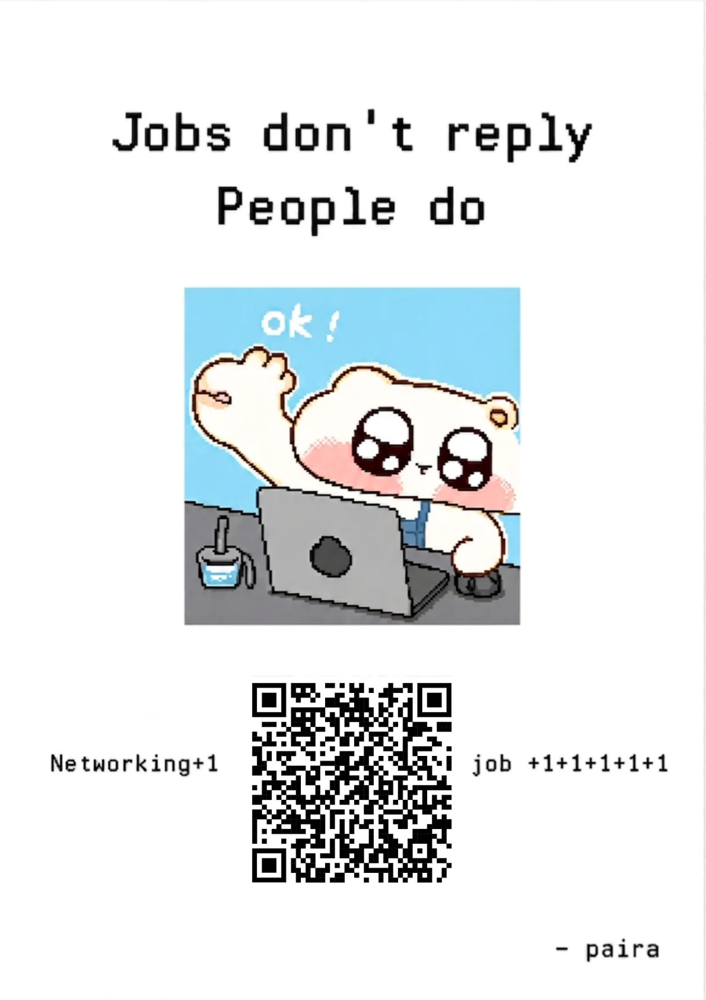


A launch is a moment. A product is a habit. Since June the team has been preparing a back-to-school push, and my role has moved toward marketing and storytelling: the website’s sign-up flows, event and launch creative, and the short videos that explain what Paira does in under a minute.
Designed the beta sign-up and referral-code flow on paira.org, phone verification to TestFlight in two pages, and the “You are in!” install page.
App Store launch creative, a July speaker series on breaking into Big Tech, and the referral tier system that ran from the waitlist onward.
A 55-second iPhone Duo concept film, storyboarded and art-directed by me, built with an AI coding agent from our real product assets.
Paira is on the App Store and at paira.org. The site carries the team’s current public positioning, which is not all mine.
Paira taught me to hold two altitudes at once: the product-level call to build around a request, and the screen-level work of making that call felt in an onboarding step, a badge label, or a points menu. Direction and interface are the same decision made at two scales. It also taught me what a pivot leaves behind. Premium Ping and “See who Paira’d you” still speak the language of matching. The mentor-side AI flow has shipped, and I want to see it earn its place with real helpers. Those are the next things I want to fix. The product is still moving, so I can.
The request as the unit of the product, badges that explain instead of score, and a daily Explore that ends. Constraints made the helper side feel finishable.
Narrow the paid layer to request visibility, retire the match-era features, and measure how much profile a first request really needs.